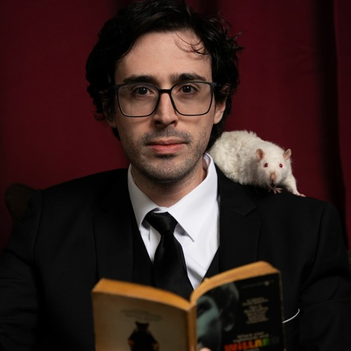

These are my favorite foods!
- Goto
- I love goto because this shit is not too sweet, nor too bad, its the perfect amount of tasty.
- Toron
- Oh how much i love this. The skin paired with the banana inside is so goddamn good.
- Fries
- I really love the sour & cream flavor on this, and also the loaded fries version.

Will Wood is the best
Honestly he is the sunshine and the moon at night,
he shakes the apples from my family tree, he eases my half decade halfovers. without him, i would take the first step and remember the most important thing in my life:
memento mori. He made me forget 2012. But dang, he should read me my rights please. in case i make it, i will be the main character, i will be I/me/myself. well, it is better than the alternative! The date is 2/2/2 today.
My Top 10 Favorite Will Wood Songs
(Note: This is not in order)
- 2econd 2ight 2eer
- Suburbia Overture/ (Vampire) Culture / Love me, Normally
- 6up 5oh Cop-Out
- Memento Mori: The most important in the world
- The Song With Five Names aka Soapbox Tao aka Checkmate Atheists! Aka Neospace Government aka You Can Never Know!
- Mr Capgras Encounters a Secondhand Vanity (Anatta, Dukkha, Anicca)
- Against The Kitchen Floor
- Tomcat Disposables
- Skeleton Appreciation Day in Vestal NY, (Bones)
- Love, Me Normally
 Next Page
Next Page